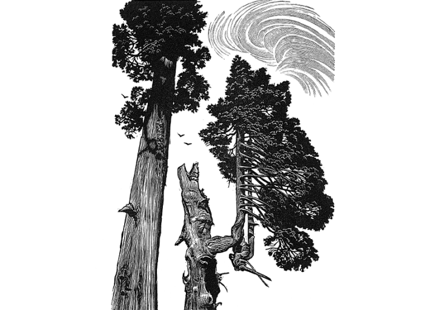
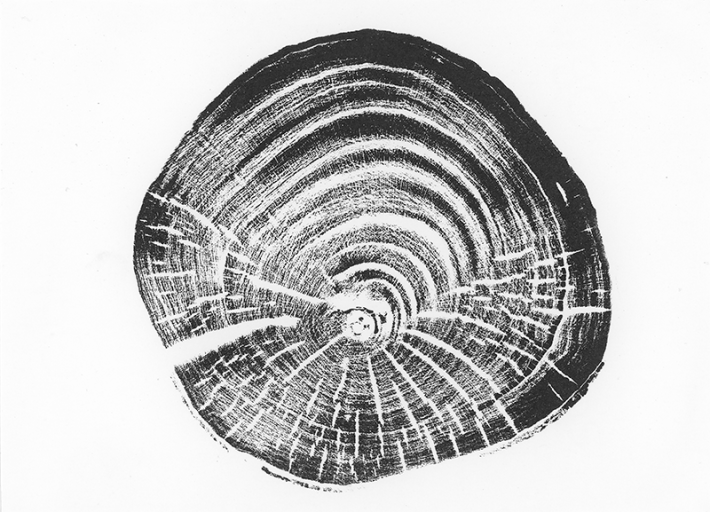

Some trees alive today were young saplings when the Egyptian pyramids were still works in progress. Individual Great Basin Bristlecone Pine scattered thinly across the rocky slopes of Nevada, and Lañilawal—an Alerce Cypress growing in Chile—a tree so grand, it has earned its own mononym. Many others are younger, but ancient still, having erupted out of the ground at the same time as humanity stepped into the Common Era, some 2,000 years ago. Qilian juniper growing along the silk road in China,* Bosnian pine clinging to the marble hills of Mount Olympus, residence of the ancient Greek gods.
The bodies of these trees carry a record, imprinted in their tree rings, of lives lived in one single spot, under changing weather and climate, through adversity and prosperity, fire and snowstorm, and contact with humans.
Once you know where to look, you can learn to spot these ancients in the landscape. Often, they will have a twisted sturdy bark, a thick trunk and heavy branches, and a deadened, crooked top. That’s because, once they reach a certain age, trees only grow in girth, no longer in height, and the crown begins to die off as it becomes more difficult to deliver nutrients to these most distant branches. And yet many of these trees will continue to live long into our uncertain climate future.
Renowned dendrochronologist Valerie Trouet recently put together a collection of essays written by the scientists who study these greats, calledIn The Circle of Ancient Trees. Each essay is dedicated to one of 10 species of tree from far-flung geographic locations, and what their tree rings can tell us about the past and future of the Earth. Nautilus talked with Trouet ahead of the publication about what tree rings can tell us about archaeology, Renaissance furniture, climate change, and William Blake.

TREE TALK:Dendrochronologist Valerie Trouet talked with Nautilus ahead of the publication of her new book In The Circle of Ancient Trees about what tree rings can tell us about our past and our future on Earth. Photo by Bob Bronshoff.
What is dendrochronology?
Dendrochronology comes from the Greek words dendron and chronos, so tree and time. And that's what we do as dendrochronologists. We read time through the rings in trees, we read history through trees. But it's not just the number of rings that gives us information, it's also the width of the rings, the density of the wood, all kinds of characteristics that tell us what happened during the lifespan of those trees. This is climate information, but also information about how we as human beings interacted with the trees, and about fires.
Wildfires, when they don't kill the tree, they leave scars. And through tree ring research, we can date the exact years and sometimes even the season when those trees were scarred. And so we can build a whole history of when the big fire years happened, what caused those fire years.
There is a lot of value then, for climate change research in particular.
Worldwide, reliable measurements of even the basic weather, like temperature and rainfall, go back to around 1900. So we only have a-hundred-and-something years of data, which is not bad. But at the same time that we started measuring these climate variables, we started messing with our climate. Around 1850, with the Industrial Revolution, is when we started on a grand scale burning fossil fuels, which has been influencing the entire period over which we've been measuring climate.
So if we want to get an idea of how natural climate change functions, how the climate system works under natural conditions, we need to go further back in time than our actual measurements. We need to find other ways of looking at climate. Tree rings are a very good way of doing that.

Image by Blaze Cyan.
How does dendrochronology fit with other climate science, including a geological perspective on climate?
I think it's a very good question because I think that's what makes tree rings so valuable as a method. Where we're using tree rings to look at the climate of the past we're looking by and large at the past 2,000 years. We can go further back but it's rare. And so relatively speaking to many geoscientists who look at millions of years, hundreds of thousands of years, that's a very short period. But it is a very important period because it’s a period over which we also know the most about human history. So we can really look at the relationship between climate history and human history, if there's a relationship, and how that relationship works. That's one.
And two, these are timescales that matter to humanity and our individual lives, but also these are the timescales that we can impact with our current policies. Who knows what our climate will look like a million years from now? I mean, will we even be still around? But what our climate will look like 1,000 years from now, we can determine. The CO2 we put out into the atmosphere today will still be in the atmosphere 1,000 years from now. So these are the timescales also for policy that are really relevant.
Wildfires, when they don't kill the tree, they leave scars.
Is a pattern emerging?
Well, it's similar to what we know from instrumental data [direct measurement of Earth’s climate from instruments such as thermometers and satellites]. For temperature, it is pretty straightforward. Temperature-wise, we're in unprecedented terrain currently, where it's warming up and it hasn't been this warm in the past 2,000 years. That picture is very clear. But really the goal is to add information to what we know from the instrumental period [which only came into full swing in the 1980s, when satellite coverage covered the whole globe], rather than to say, yeah, it's all right, or it's all wrong. It's adding a level of nuance and of detail to what we know.
I was surprised to learn that a lot of the authors have a background in archaeology. They love trees, but they come to the field because they have an interest in the past. They use tree rings to date Ancestral Pueblan ruins in the American Southwest, or Maori cultural treasures, even Renaissance works of art and furniture made of pedunculate oak.
A lot of people come through this field of science from an archaeological background because it's not just about trees, it's also about wood. The information that the trees store in their rings remains even when the trees die. When they're being cut, when they're transformed into wooden buildings or wooden beams or even charcoal, we can still use that wood and the rings in that wood to extract information. That allows us to date that archaeological material to the exact year.

Image by Blaze Cyan.
Is there a shared property that makes certain trees grow incredibly old? What is their secret?
There are rules and then there are exceptions to the rules. Typically, you will find very old trees in remote places where people over thousands of years have not had easy access to wood. Very often at high elevation and in dry environments, which makes the trees grow very slowly. The paradigm, “live fast and you die young, or you live slow,” it's the same for trees.
Remote areas that are austere are also a lot harder on organisms that can typically attack trees. So, you have fewer insects, you have fewer grasses and shrubs that can fuel wildfires. But, as I mentioned, there are exceptions.
One of the chapters in the book is about a bald cypress that grows in the southeast of the United States. They can be up to 2,800 years old—so very old. But they literally grow with their feet in the water. They live in marshes, so they're very unexpected. It's not the kind of environment where you would expect to find these very old trees.
The book is really at its core about the connections between trees and people. The people telling the stories are the people who are most connected to the trees. It reminded me of some writing by William Blake. In a letter to a friend he wrote “the tree which moves some to tears of joy is in the eyes of others only a green thing that stands in the way.” What else can we do to get people more connected to nature?
That’s a very good question. On the one hand, there is a growing movement and a growing awe. If you look at how many books have been published about trees in recent years—very good books, very beautiful books, fiction and non-fiction— you know, we've come a long way. Some 100 or 150 years back, much of North America was deforested without even thinking about it. So we've come a long way.
I think what this book—and the dendrochronological community—can add, and what maybe people don't think about enough, is the time component. You know, some of these trees are 3-, 4-, 5,000 years old. They were around when we were building pyramids, right? And they're still around. They're still alive. They transcend our individual lives and they will still be around, many of them, a thousand years from now. So they are witnesses not just to our past but of the future. And they don't lie. 
EnjoyingNautilus? Subscribe to our freenewsletter.
Blaze Cyan is an artist working within the mediums of drawing, etching, woodcut, and wood engraving. Blaze is a Fellow of the Royal Society of Painter-Printmakers, a member of the Society of Wood Engravers, and also the Arborealists. She lives in London.
*As originally published, this article mistaken identified the trees along the silk road as pedunculate oak. This has been corrected.